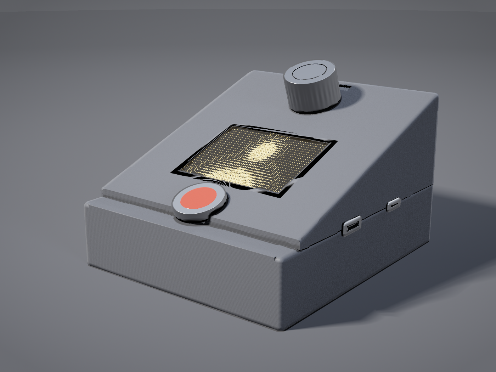
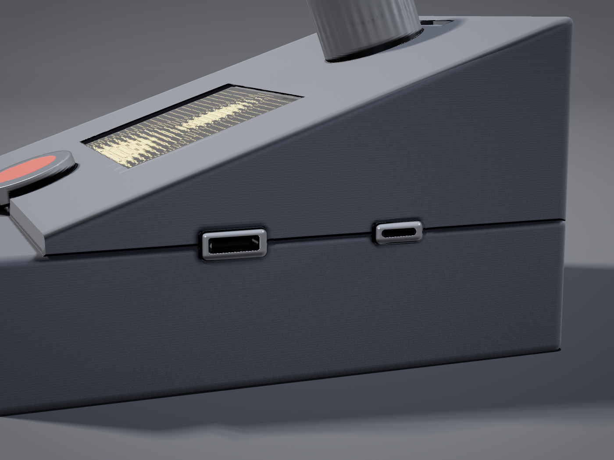
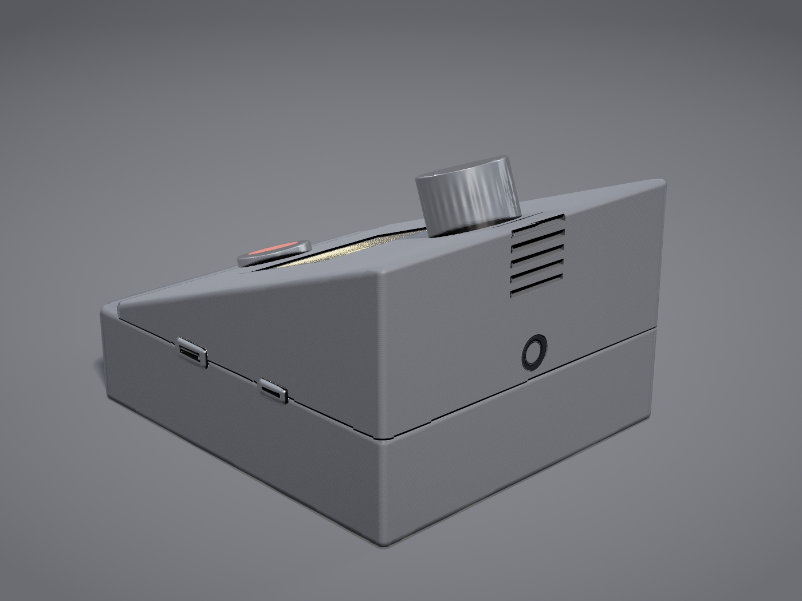
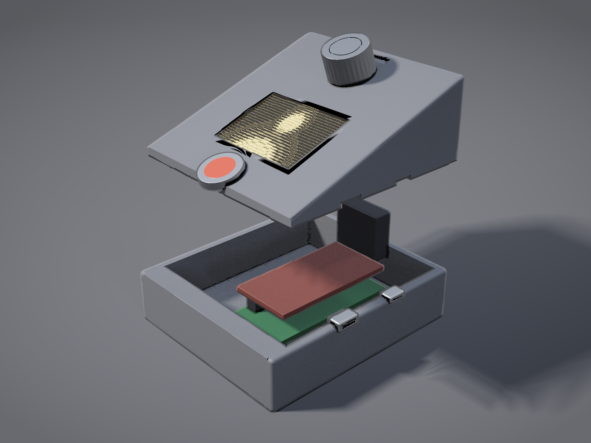

Raspberry Pi Zero 2 WH · AsciiArt
Four raytraced views of the sloped console that Panel connectors and controls arrives at. The geometry is built from that guide's stated dimensions rather than sketched to look right, so anything measurable in these pictures is the design being measured, not an artist's impression of it.


z = 25 mm passes through the centreline of both connectors,
which is the only thing that lets a printed pocket capture them at all — half the pocket
is in the base, half in the lid, and closing the box clamps the connector between them.
Mini-HDMI to the south, USB-C power in to the north, each directly opposite the Pi port
it serves.


Everything in the table below is read out of the connectors guide and enters the model as a number. If one of these looks wrong in a picture, the picture is wrong.
| Dimension | Value |
|---|---|
| Footprint | 92 × 105 mm |
| Height, north / south | 62 / 25 mm |
| Fascia slope | 19° |
| Parting plane | z = 25 mm |
| Wall | 3 mm |
| Camera lens height | 31 mm, centred on the north face |
| Panel active area | 48.9 × 36.7 mm |
| Ports | east wall, mini-HDMI south, USB-C north, both on z = 25 |
| Fascia order, north to south | encoder, panel, button |
These are not in the guide, and were chosen to make a picture:
One point had to be resolved rather than read off. A 3 mm fascia whose outer surface runs from 25 mm at the south to 62 at the north has no thickness left at the southern end, where it meets a base rim that is also at 25. The model gives the base a flat 10 mm deck along the southern lip and starts the sloped lid north of it, which is the step visible at the front of Fig. R1. A lap joint, with the lid wrapping down over the south wall, would do the same job differently.
The enclosure is a signed distance field, marched per pixel in numpy by
tools/enclosure_render.py in the repository. The floor is intersected
analytically and kept out of the field, which is where most of the speed comes from.
Shading is a three-light rig with SDF soft shadows and ambient occlusion, GGX specular with
a per-material Fresnel term, one cosine-weighted diffuse bounce at two samples, and an ACES
tonemap. Each image is 1400 × 1050 at 2× supersampling.
The panel is showing real ASCII: a 5 × 7 bitmap font over the app's own
" .:-=+*#%@" ramp at 64 × 24, which is the grid src/lcd_display.py
produces at its default font size of 8.
There is no renderer, modelling package or image library involved — numpy and the
standard library only, with the PNG written by hand and recompressed losslessly by
tools/optimise_png.py.